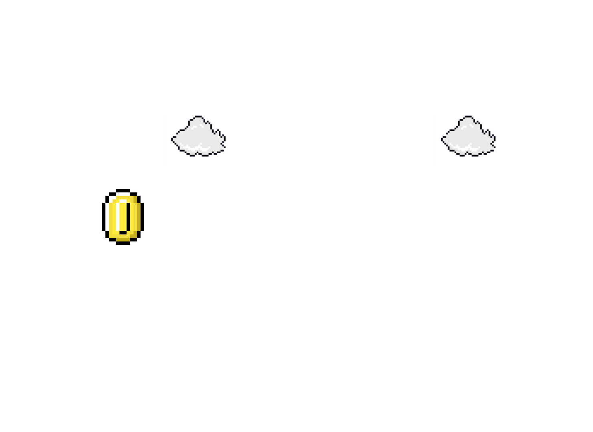
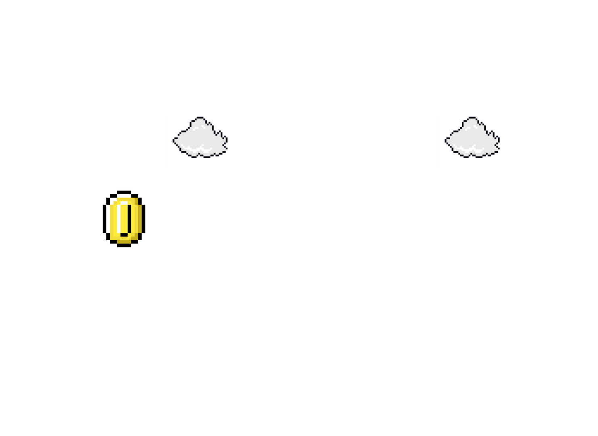

Super Mario is a renowned video game franchise developed by Nintendo. It first emerged in 1985 with the release of
"Super Mario Bros." The franchise revolves around the adventures of Mario, a plumber, as he embarks on various quests
to rescue Princess Peach from the antagonist, Bowser.
The original game introduced a side-scrolling platforming concept where players guided Mario through levels, overcoming
obstacles and enemies. Mario's abilities include jumping on enemies to defeat them, collecting power-ups, and navigating
through pipes and underground areas.
Super Mario quickly gained immense popularity, leading to the creation of numerous sequels and spin-offs across different
Nintendo consoles. Notable entries in the series include "Super Mario Bros. 3," "Super Mario World," "Super Mario 64,"
"Super Mario Galaxy," and "Super Mario Odyssey."